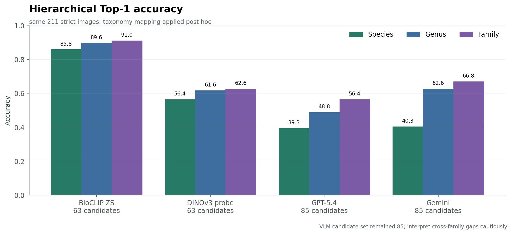
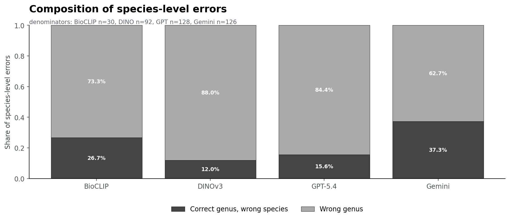
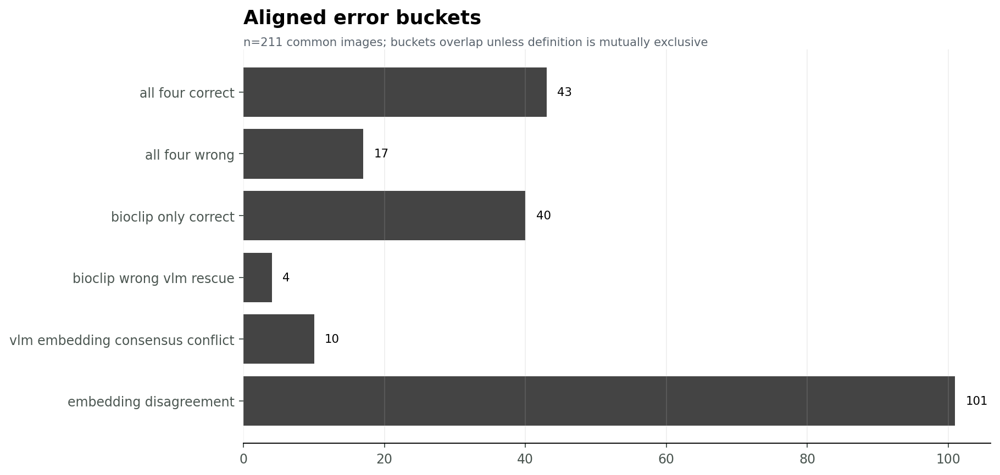
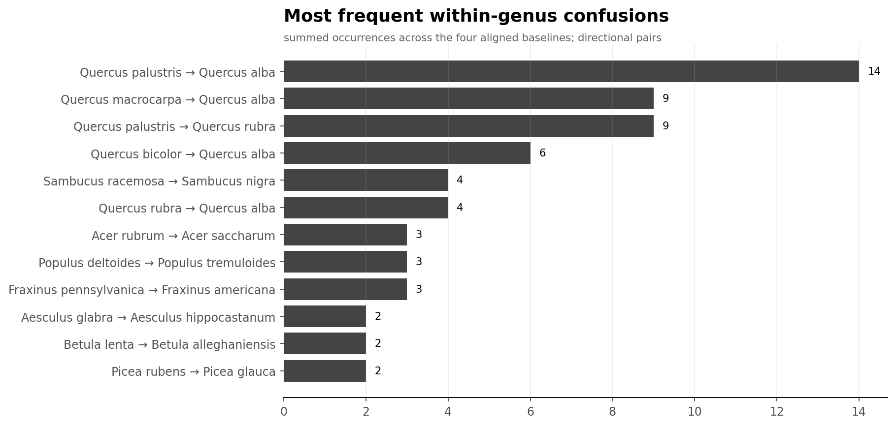

all four wrong
Nyssa sylvatica
- BioCLIP
- Lindera benzoin ✗
- DINOv3
- Cornus amomum ✗
- GPT
- Lonicera morrowii ✗
- Gemini
- Lonicera morrowii ✗
Four baselines aligned on the same 211 strict test images and 63 observations. Facts are separated from unannotated hypotheses.
error_analysis/data/unified_predictions_image.csv · error_analysis/data/observation_predictions.csv

Taxonomy is applied after prediction; original species benchmark remains unchanged.
| Model | Candidates | Species Top-1 | Genus Top-1 | Family Top-1 | Source |
|---|---|---|---|---|---|
| BioCLIP 2.5 zero-shot | 63 | 85.8% | 89.6% | 91.0% | error_analysis/taxonomy_analysis/taxonomy_level_accuracy.csv |
| DINOv3 frozen + linear probe | 63 | 56.4% | 61.6% | 62.6% | error_analysis/taxonomy_analysis/taxonomy_level_accuracy.csv |
| GPT-5.4 direct VLM | 85 | 39.3% | 48.8% | 56.4% | error_analysis/taxonomy_analysis/taxonomy_level_accuracy.csv |
| Gemini 2.5 Flash Lite direct VLM | 85 | 40.3% | 62.6% | 66.8% | error_analysis/taxonomy_analysis/taxonomy_level_accuracy.csv |
Observation prediction uses majority vote across its images, with mean model score to break ties. Observations contain 1–16 images.
| Model | Candidates | Image Top-1 | Image Top-5 | Observation majority | Observations with any correct image |
|---|---|---|---|---|---|
| BioCLIP 2.5 zero-shot (strict 63-class) | 63 | 181/211 (85.8%) | 201/211 (95.3%) | 57/63 (90.5%) | 58/63 |
| DINOv3 frozen + linear probe (strict 63-class) | 63 | 119/211 (56.4%) | 176/211 (83.4%) | 40/63 (63.5%) | 43/63 |
| GPT-5.4 direct VLM (85-class) | 85 | 83/211 (39.3%) | 137/211 (64.9%) | 28/63 (44.4%) | 36/63 |
| Gemini 2.5 Flash Lite direct VLM (85-class) | 85 | 85/211 (40.3%) | 138/211 (65.4%) | 26/63 (41.3%) | 32/63 |
error_analysis/data/model_summary.csv · error_analysis/data/observation_predictions.csv

error_analysis/taxonomy_analysis/species_error_taxonomy_breakdown.csv

Buckets can overlap. Definitions and every row are preserved in CSV.
error_analysis/data/bucket_summary.csv · error_analysis/data/correctness_patterns.csv

error_analysis/taxonomy_analysis/within_genus_confusions.csv · error_analysis/data/shared_confusion_pairs.csv
These are display samples, not automatically interpreted failure causes. Human annotation fields remain blank.


Open the complete priority-bucket gallery →
error_analysis/annotation/human_error_annotation.csv · error_analysis/annotation/annotation_codebook.csv